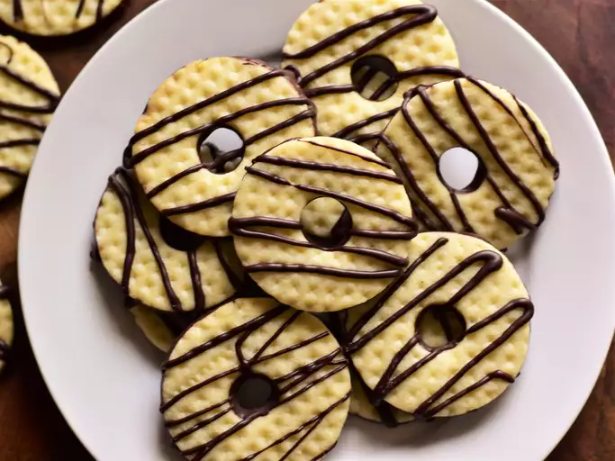

Fudge Stripe Cookies

Who doesn't love a chocolate chip cookie?
They are made with a simple sugar cookie dough that is very easy to work with and roll out.
I used semi-sweet chocolate for a sweeter flavor, but of course you can use whatever chocolate you like, the important thing is to enjoy.
Ingredients
- 1 cup unsalted butter, softened
- ¾ cup granulated sugar
- 1 large egg
- 1 ½ teaspoons vanilla extract
- ½ teaspoon kosher salt
- 2 ½ cups all-purpose flour
- 1 (12 ounce) bag semisweet chocolate chips
Steps for preparation
- Combine butter and sugar in a stand mixer and beat with the paddle attachment on medium speed until light and fluffy, about 3 minutes, stopping to scrape down sides of the mixing bowl once or twice. Add egg, vanilla, and salt; beat until well-incorporated, about 30 seconds. Reduce mixer speed to low and gradually add flour, beating on low until just combined, about 1 minute.
- Divide dough in half, and flatten each half into a 1/2-inch-thick disk. (Disks will be about 12.5 oz. each.) Wrap each disk in plastic wrap, and chill until firm, at least 30 minutes or up to 2 days.
- Line two baking sheets with parchment paper; set aside.
- Working with one disk at a time, roll dough on a lightly floured surface to 1/4-inch thickness. If desired, prick the dough with a docking tool or run over the dough with an embossed rolling pin to create a decorative texture. If you do not have a docking or decorating tool, use a meat mallet to emboss the dough: apply the mallet textured-side down and lightly tap the center of the smooth side with the heel of your hand, and repeat, being sure to line up decorative scores.
- Cut out rounds with a 2-inch round cutter. Place rounds 1-inch apart on the prepared baking sheets. Repeat with second dough disk, then gather all dough scraps and discard. Using a 1/2-inch cutter or piping tip, cut out and remove the center of each dough round to create a donut shape. Reserve any extra dough for another use. Chill cut-out cookies until firm, about 30 minutes.
- Preheat the oven to 350 degrees F (175 degrees C).
- Bake cookies, one sheet at a time, in the preheated oven until edges begin to brown, about 12 minutes. Cool cookies on the baking sheet for 10 minutes. Transfer cookies to a wire rack, and cool completely, about 30 minutes. Repeat with second baking sheet.
- Place chocolate in a medium microwave-safe bowl. Microwave on HIGH until melted, about 2 minutes, stopping to stir every 30 seconds. Transfer 1/4 cup of the chocolate to a piping bag and cut a 1/8-inch hole at the end.
- Place wire rack over a parchment lined baking sheet. Pipe four stripes across the top of each cookie. Dip the base of each cookie into the bowl of melted chocolate, scraping the excess off on the side of the bowl. Place chocolate-side down on a clean parchment-lined baking sheet. Chill until chocolate is set, about 10 minutes.
- Store cookies in an airtight container in the refrigerator for up to 4 days.
Cook's Note
If dough is too sweaty or warm to cut out the center into a neat donut shape, chill the whole rounds first and cut out the center pieces after chilling.